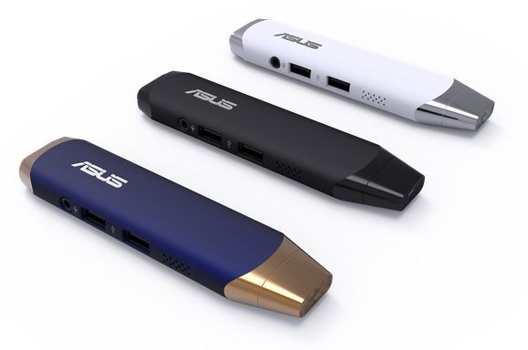

Over the past year we’ve seen a number of PC-on-a-stick computers, including models from Chinese companies like MeegoPad and Mele and bigger names like Intel and Lenovo.
Now Asus is launching its first Windows PC-on-a-stick, and it’s one of the most interesting models I’ve seen so far.
The Asus VivoStick PC features an Intel Atom Cherry Trail processor and more ports than you get with most devices in this category.

The VivoStick PC measures 5.4″ x 1.3″ x 0.6″, making it small enough to hold in one hand or slide into your pocket. But plug the VivoStick PC into the HDMI port of your TV and it becomes a full-fledged (albeit low-power) Windows desktop computer.
This model features an HDMI connector, one USB 3.0 port, one USB 2.0 port, two USB 2.0 ports, a micro USB port (for power) and a mic/headphone headset jack.
One thing that this model doesn’t have? A microSD card slot.
Asus says the VivoStick PC will be priced at $129, but no release date has been announced yet.


This isn’t the first PC-on-a-stick Asus has revealed. In March the company unveiled the Asus Chromebit, a $100 Chrome OS computer-on-a-stick. But that model’s still not available for purchase yet.
Update: Asus originally told us the VivoStick would have one USB 3.0 port and one USB 2.0 port, but that spec has since been changed to reflect the fact that the PC stick will feature two USB 2.0 ports.